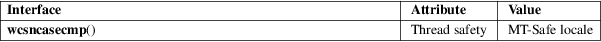

wcsncasecmp − compare two fixed-size wide-character strings, ignoring case
Standard C library (libc, −lc)
#include <wchar.h>
int wcsncasecmp(const wchar_t s1[.n], const wchar_t s2[.n], size_t n);
Feature Test Macro Requirements for glibc (see feature_test_macros(7)):
wcsncasecmp():
Since glibc 2.10:
_POSIX_C_SOURCE >= 200809L
Before glibc 2.10:
_GNU_SOURCE
The wcsncasecmp() function is the wide-character equivalent of the strncasecmp(3) function. It compares the wide-character string pointed to by s1 and the wide-character string pointed to by s2, but at most n wide characters from each string, ignoring case differences (towupper(3), towlower(3)).
The wcsncasecmp() function returns zero if the wide-character strings at s1 and s2, truncated to at most length n, are equal except for case distinctions. It returns a positive integer if truncated s1 is greater than truncated s2, ignoring case. It returns a negative integer if truncated s1 is smaller than truncated s2, ignoring case.
For an explanation of the terms used in this section, see attributes(7).

POSIX.1-2008.
glibc 2.1.
The behavior of wcsncasecmp() depends on the LC_CTYPE category of the current locale.
strncasecmp(3), wcsncmp(3)